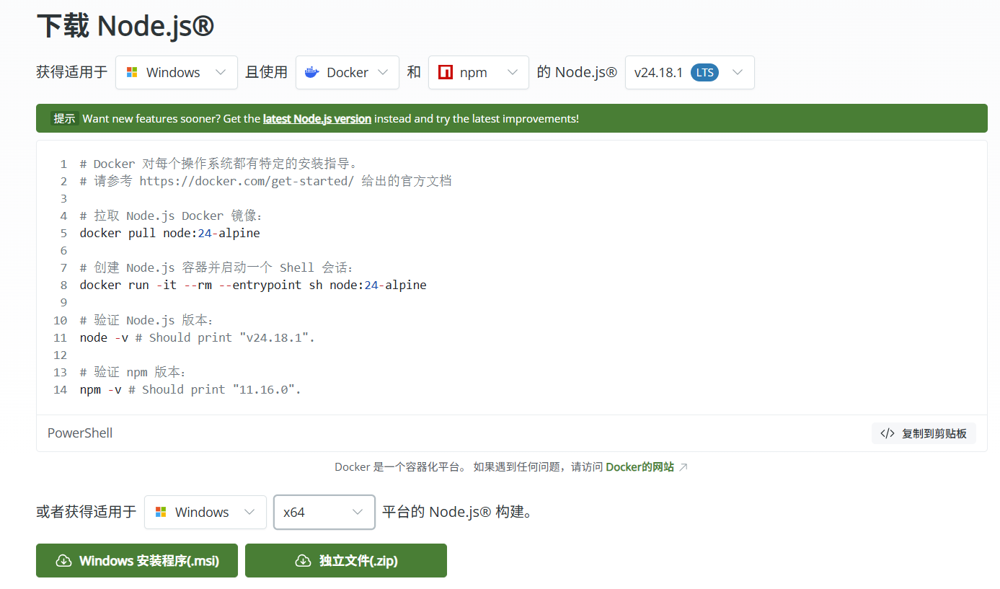
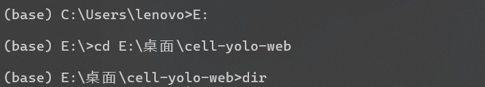
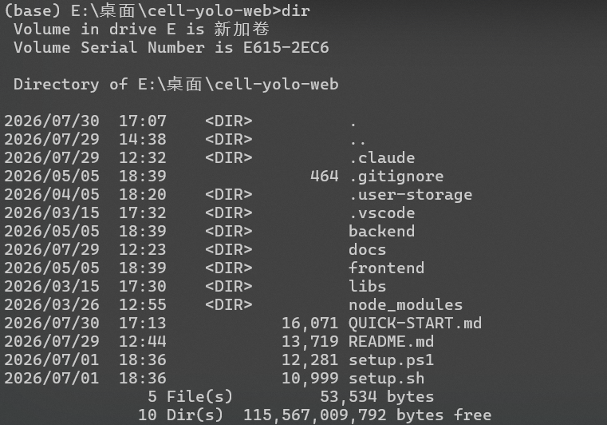
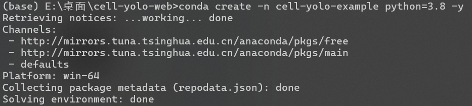
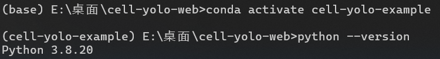
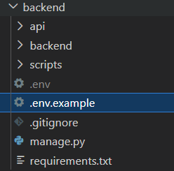
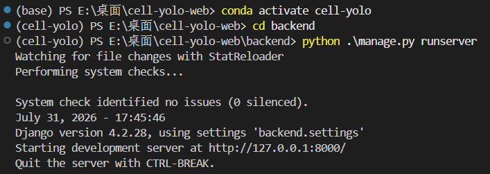
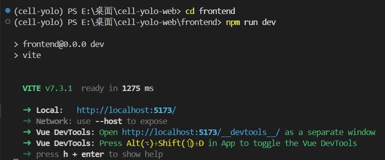
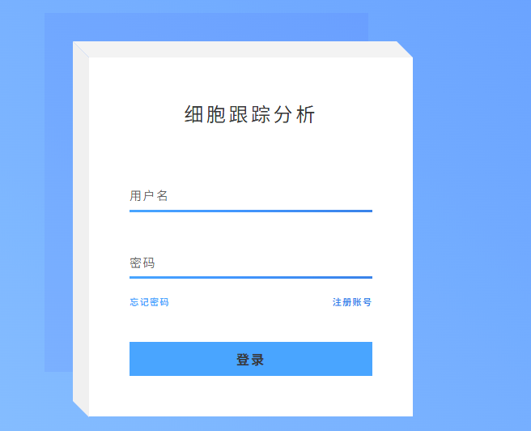

快速开始指南 | v1.0
细胞分割与追踪系统 — 基于 YOLOv8 + DeepSORT
本指南帮助你在 15 分钟内完成环境搭建并启动应用
适用平台：Windows / macOS / Linux
Python 3.8+ | Node.js ≥20.19 | MySQL
安装步骤一览：
| 步骤 | 做什么 | 关键命令 | 预计耗时 |
|---|---|---|---|
| 〇 | 检查环境 + 进入项目目录 | cd /path/to/cell-yolo-web | 1 min |
| 一 | 创建 conda 环境 | conda create -n cell-yolo python=3.8 | 3 min |
| 二 | 安装 MySQL | brew install mysql 或下载安装包 | 5 min |
| 三 | 配置 .env | cp .env.example .env → 编辑密码 | 2 min |
| 四 | 安装 Python 包 | pip install -r requirements.txt | 5 min |
| 五 | 初始化数据库 | python init_db.py → migrate → init_data | 2 min |
| 六+七 | 验证本地库 + 安装前端 | npm install | 3 min |
在开始安装之前，请确认以下三个基础软件均已安装：
| 软件 | 用途 | 检查命令 | 未安装？ |
|---|---|---|---|
| Python / Conda | 后端运行环境 | python --version |
安装 Miniconda |
| Node.js | 前端运行环境 | node --version |
安装 Node.js（需 ≥20.19） |
| MySQL | 数据库 | mysql --version |
见第二步安装指引 |
nodejs.org 下载安装 Node.js，npm install 和 npm run dev 将无法执行。

C:\Users\lenovo 或 /Users/xxx）。cd 到项目根目录，否则后续所有 cd backend 都会报"找不到路径"！
# 请替换为你电脑上本项目的实际路径 cd /path/to/cell-yolo-web

ls # macOS/Linux → 应输出 README.md QUICK-START.md web dir # Windows → 应输出 README.md QUICK-START.md web

README.md、QUICK-START.md 和 web 文件夹，说明目录正确。
使用 Conda 创建名为 cell-yolo 的虚拟环境（推荐 Python 3.8）：
conda create -n cell-yolo python=3.8 -y # 创建环境 conda activate cell-yolo # 激活环境 python --version # 验证版本


(cell-yolo) 前缀。conda activate cell-yolo。
brew install mysql brew services start mysql mysql_secure_installation
按提示设置 root 密码即可。
Win+R → services.msc → 找到 MySQL → 右键"启动"mysql -u root -p CREATE DATABASE cell_tracking CHARACTER SET utf8mb4 COLLATE utf8mb4_unicode_ci; EXIT;
brew services list | grep mysql |
Windows：打开服务管理器查看 MySQL 服务状态
在 backend 目录下创建 .env 文件：
cd backend cp .env.example .env # macOS/Linux # Windows：手动复制 .env.example 并重命名为 .env

编辑 .env，填入以下内容（替换密码和 API 密钥）：
SECRET_KEY=django-insecure-changeme-in-production DEBUG=True DB_HOST=localhost DB_PORT=3306 DB_USER=root DB_PASSWORD=your_password ← 替换为你的 MySQL 密码 DB_NAME=cell_tracking DEEPSEEK_API_KEY=your_deepseek_api_key ← 替换为你的 API 密钥 DEEPSEEK_API_BASE=https://api.deepseek.com/v1
.env.txt。/ 或双反斜杠 \\。
确保在 backend 目录下，且已激活 conda 环境：
pip install -r requirements.txt
| 类别 | 包名 | 版本 | 说明 |
|---|---|---|---|
| Web 框架 | Django | 4.2.28 | 后端框架 |
| REST API | djangorestframework | 3.15.2 | API 接口 |
| WebSocket | channels | 4.2.2 | 实时进度推送 |
| 视频处理 | opencv-python | 4.13.0 | 视频读写 |
| 深度学习 | torch / torchvision | 2.4.1 | 神经网络推理 |
| YOLO | ultralytics | 8.4.21 | 本地库，无需 pip |
| 追踪 | deep-sort-realtime | 1.3.2 | 多目标跟踪 |
| 数据处理 | numpy / pandas / scipy | 1.24 / 2.0 / 1.10 | 数据分析 |
web/libs/ultralytics，通过 settings.py 中的 sys.path 自动配置，无需额外安装。
cd scripts python init_db.py
成功输出：✓ 数据库 'cell_tracking' 创建成功或已存在
cd ../backend python manage.py migrate
.env 中密码错误。.env 中 DB_PASSWORD 是否正确cd ../scripts python init_data.py
脚本会自动完成：
| 步骤 | 做什么 | 说明 |
|---|---|---|
| 1 | 检查数据库表结构 | 检查 users / tasks / videos 等表的字段是否完整，自动修复缺失字段 |
| 2 | 创建 root 用户 | 用户名 root，密码 password |
| 3 | 导入默认模型 | 在 models 表中创建初始模型记录 |
成功后关键输出：
✓ root 用户创建成功 (ID: 1) 用户名: root 密码: password ✓ 导入 model 创建成功 ✓ 初始化完成！
root / password — 可用于登录系统和 Django 管理后台。
python -c "import ultralytics; print(f'ultralytics: {ultralytics.__version__}')"
python -c "from ultralytics import YOLO; print('✓ YOLO OK')"
python -c "from deep_sort_realtime.deepsort_tracker import DeepSort; print('✓ DeepSORT OK')"
conda activate cell-yolo。VSCode 用户：Cmd+Shift+P → Reload Window。
cd ../frontend npm install
| 类别 | 包 | 版本 | 类别 | 包 | 版本 |
|---|---|---|---|---|---|
| 框架 | Vue 3 | 3.5 | 样式 | TailwindCSS | 4.1 |
| 构建 | Vite | 7.3 | 路由 | Vue Router | 5.0 |
| 语言 | TypeScript | 5.9 | 图表 | ECharts | 5.6 |
| 状态 | Pinia | 3.0 | 编辑器 | CodeMirror | — |
npm install 报错，先检查 node --version。
在 web 目录下，打开两个终端：
| 终端 1 — 后端 | 终端 2 — 前端 |
|---|---|
cd backend conda activate cell-yolo python manage.py runserver → http://localhost:8000 |
cd frontend npm run dev → http://localhost:5173 |


如果前端页面显示 Request failed with status code 500 或类似错误：
| ① | 在终端 1 中按 Ctrl+C 停止后端 |
| ② | 在终端 2 中按 Ctrl+C 停止前端 |
| ③ | 先启动后端（python manage.py runserver）→ 再启动前端（npm run dev） |
| ④ | 刷新浏览器页面（F5） |
| 错误现象 | 可能原因 | 检查方法 |
|---|---|---|
| "找不到路径/文件" | 终端不在项目根目录 | pwd (macOS) 或 cd (Win) 查看当前路径 |
| "conda: command not found" | conda 未安装/未配置 PATH | 重新打开 Anaconda Prompt |
| "npm: command not found" | Node.js 未安装 | node --version 检查 |
| 数据库连接失败 | MySQL 服务未启动 | 检查服务管理器 / brew services list |
| "ModuleNotFoundError" | 未激活 conda 环境 | conda activate cell-yolo |
| "Access denied for user" | .env 中密码错误 | 检查 .env 中 DB_PASSWORD |
启动成功后，可通过以下地址访问：
| 服务 | 地址 | 说明 |
|---|---|---|
| 前端应用 | http://localhost:5173 | 用户界面 |
| 后端 API | http://localhost:8000/api/test/ | API 测试端点 |
| Django 后台 | http://localhost:8000/admin/ | 管理后台（root / password） |
| 方法 | 路径 | 说明 |
|---|---|---|
| GET | /api/test/ | 测试接口 |
| POST | /api/upload/ | 上传视频 |
| POST | /api/process/ | 启动处理任务 |
| GET | /api/status/:task_id/ | 查询任务状态 |
| GET | /api/result/:task_id/ | 获取处理结果 |
| GET | /api/video/:task_id/ | 获取标注视频 |
| WS | /ws/task/:task_id/ | WebSocket 实时进度 |

打开浏览器访问
http://localhost:5173
📌 快速链接：
• 登录账号：root / password
• 项目 README：README.md
• 技术笔记：docs/v2/
• 改进路线：docs/v2/改进方向与技术路线.md
• 算法答辩准备：docs/v2/具体要求.md
🧪 CellTrack Web — 让细胞追踪触手可及